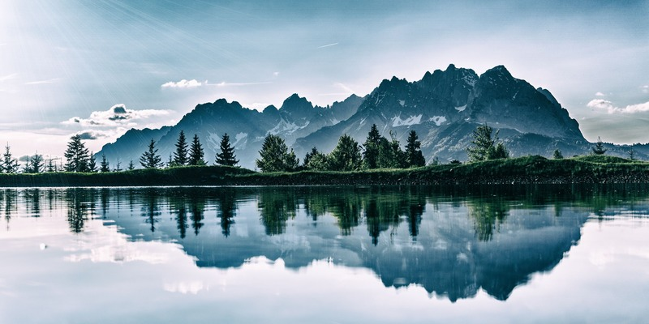
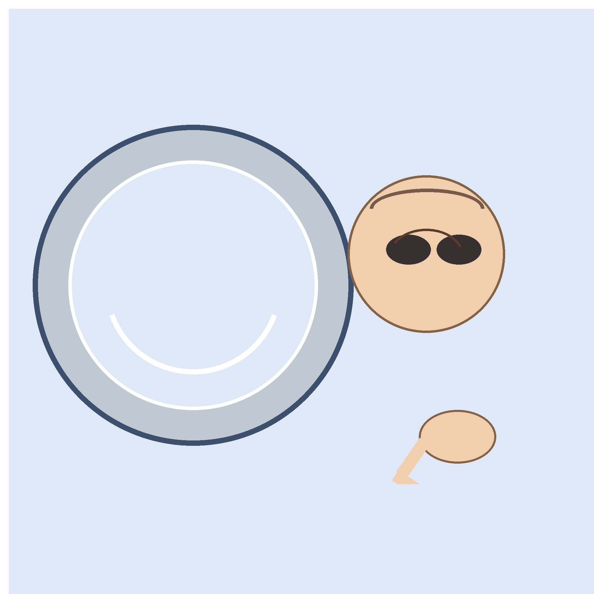

Original Image
Click to open the image in its original JPG format: Original JPG
This page explores how images behave in the web environment: how format affects file size, how resizing changes visual quality, and how proportion matters when an image is edited or displayed. The goal is to understand why a large original photo can look crisp in one context and distorted or blurry in another.
I chose this big landscape image because it has lots of color, fine detail, and a strong sense of depth, which makes it useful for comparing file formats and resizing changes. The photo was taken by Henrique Baldy and is a royalty-free Pexels image, so I saved it with a filename that preserves the original name, source, and photographer credit.
Click to open the image in its original JPG format: Original JPG
The original file is 3000 by 2000 pixels and is roughly 1.8 MB. I used CSS to shrink the same image while keeping its original proportions, which is a good example of how the browser can display a smaller version without permanently changing the source file.
By resizing the image in an editor to 600 pixels wide, the web browser receives a version that is optimized for display and keeps a balanced, natural appearance. The file is much smaller while still retaining the overall detail.
When one dimension is changed without keeping the correct ratio, the image looks stretched. This demonstrates why matching the aspect ratio matters so much when preparing photos for the web.

When a smaller image is displayed at a much larger size, it loses detail and appears blurry. The second image here is a reduced version intended for a more compact layout; when both are displayed at the same CSS size, the lower-quality version stands out.
This personal composition uses a perfectly round frisbee beside a more organic face shape to show how proportion and perspective affect visual balance. The circular object is kept round, while the face remains more subjective and rounded in a different way, which makes the comparison easier to study.
This image is intentionally built around a circular, highly proportioned object next to a stylized face. It was created and saved with a descriptive file name that identifies the source, object, and creator.

The original personal image is 2000 by 2000 pixels and is about 0.19 MB. Here the same image is reduced with CSS to make a smaller, balanced display while keeping the square format and the shapes clear.
A careful editor resize to 600 pixels wide keeps the object proportions correct and makes the subject easier to read without obvious stretching or blur. This is the version I would use for a course page or gallery card.
When the same reduced image is stretched by changing just one side, it becomes visually wrong despite still being a valid image file. The differences are easy to see when the subject is a circle or a nearly square object.
By displaying a smaller image at the same size as a higher-quality version, the lower-resolution file becomes noticeably softer. This shows how file size and display size work together in real websites.